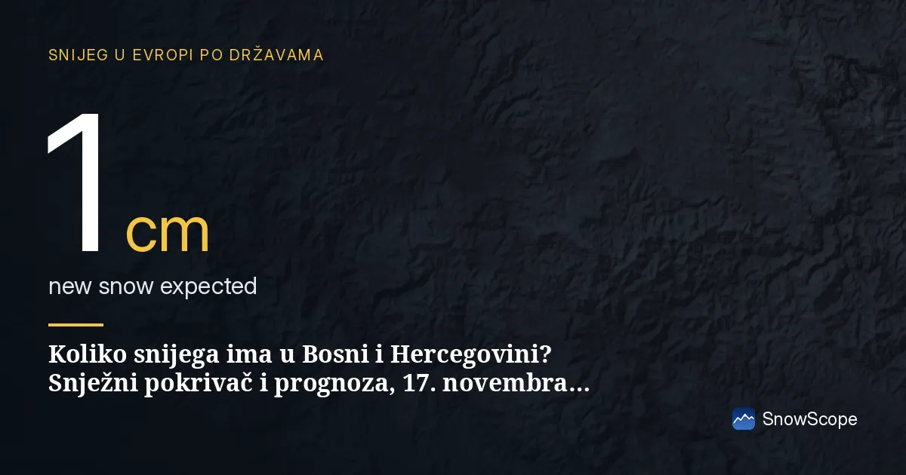

Koliko snijega ima u Bosni i Hercegovini? Snježni pokrivač i prognoza, 17. novembra 2026.
Snježni pokrivač se naglo smanjio: samo 20 km² ostaje bijelo u Bosni i Hercegovini 17. novembra, što je pad sa 490 km² samo jedan dan prije. Topljenje se dogodilo brzo, ali vlažniji uzorak dolazi u narednoj sedmici, a planine iznad 1.500 m će vidjeti stvarno nakupljanje.
Pogledajte prognozu snijega za OC Bjelašnica ZOI '84 u aplikaciji SnowScopeVisina snijega, upozorenja i 3D karta, besplatno.
Što se desilo sa pokrivačem
Nagao pad od 470 km² u jednom danu pokazuje kako je brzo topao zrak izbrisao snijeg sa nižih padina. Prije sedam dana, 160 km² je bilo bijelo; gubitak od tada je 140 km². Ovo je ritam ranog sezone na Balkanu: kratke pljuskove slijede topli valovi, a ništa se ne drži dok se planine ne ohlade i snijeg stignu na smrznutu osnovu.
Nadmorska visina govori cijelu priču. Između 500 i 1.500 m, zemlju je sada gola. Samo iznad 1.500 m karta pokazuje bilo što bijelo—manje od 1 % tog pojasa, s tragom ispod 1 cm u prosjeku. Linija snijega sjedne visoko, daleko iznad skijašких resora koji ovise o novendskom snijegu da drže zimu.
| Ski-centar | Visina snijega | Novi snijeg, 72 h | Naredni dani | Vrh |
|---|---|---|---|---|
| OC Bjelašnica ZOI '84 | 0 cm | 0 cm | 1 cm | 2.056 m |
| Igrišta olimpijski centar | 0 cm | 0 cm | 0 cm | 1.346 m |
| Jahorina olimpijski centar | 0 cm | 0 cm | 0 cm | 1.886 m |

Tri sušna dana iza nas
Posljednja 72 sata nisu donijela свјежег snijega ni jednom dijelu zemlje. Čak ni najviši vrhovi, gdje Bjelašnica i Jahorina obično hvataju prve pahuljice sezone, nisu vidjeli ništa. Ovaj suhi period je omogućio da se topljenje dogodi tako duboko.
Bjelašnica i Jahorina region, najbolje postavljena mjesta za snijeg u Bosni i Hercegovini, ima 5 cm pohranjenoj od prethodne sedmice. To je temelj, ali tanak. Trebat će mu hladne noći i свјеže nakupljanje da preživi ciklus topljenja.
Pogled resora 17. novembra
Svih 12 resora praćenih u zemlji izvještavaju nula snijega na svojim padinama danas. OC Bjelašnica ZOI '84, najviši na 2.056 m, sjedi potpuno gol. Igrišta olimpijski centar i Jahorina olimpijski centar nemaju pokrivač ni. Rana sezona je igra čekanja, i čekanje ove godine je upravo počelo.
Odsutnost ne znači da je sezona izgubljena. To znači da će prvi stvarni snježni događaj biti nevjerojatno važan. Kada stigne, padnuće na toplo tlo i brzo će se topiti osim ako hladnoća drži. Prognoza nam govori da hladnoća dolazi.
Što naredna sedmica donosi
Izgledi se drastično mijenjaju nakon 17. novembra. U naredna tri dana, očekuje se do 1 cm na najsnježnijim padinama. To nije dovoljno za otvaranje cesta ili padina, ali označava okret sezone. Do sedmog dana, prognoza dostiže 15 cm u regiji, skok koji odražava dolazak vlažnije, hladnije zračne mase.
Ponedjeljak 23. novembra se ističe kao najsnježniji dan u prognozi: do 11 cm moglo bi pasti u 24-satnom prozoru. Ovo je događaj za koji su skijači i vodohospodari čekali. Nakon tjedana jestenske topline, planine će konačno ponovno biti bijele.
Temperatura i vremenski raspored
Čvrst snijeg u ranim jutarnjim satima i mješavina do sredine popodneva opisuju ritam ovih ranosezone dana. Tlo je još uvijek toplo, pa svaka noć smrzava površinu i svaki dan je omekšava. Ovaj uzorak nastavlja se dok prvi veliki snježni događaj ne resetira bazu i hladnoća zakuči za sezonu.
Kada se to dogodi—vjerojatno oko 23. novembra—snježna masa počinje se graditi na čvrstoj osnovi. Noćna hladnoća će je držati čvrstom, a svježi snijeg će se držati umjesto nestanka u tlo. Ovo je prag između jesenskog i zimskog snijega.
Gdje motriti
Bjelašnica i Jahorina su dvije planine za motrenje. Sjede više od ostalih resora i hvataju prvi stvarni snijeg. Do 23. novembra trebale bi imati mjerljiva dubinu gdje sada ništa ne postoji. Niže padine će i dalje biti tanke ili gole, ali planine će biti bijele.
Perspektiva vode je također važna. Jedanaest centimetara 23. novembra znači značajno procjeđivanje dok se topi, i svaki свјeži događaj se dodaje zimskom rezervuaru. Planine Bosne i Hercegovine hrane rijeke koje opskrbljuju gradove i akumulacijske jezere u cijeloj regiji. Rani snijeg hrani proljetnu vodu.
Savjeti za skijaše
- Nemojte putovati u resor sada. Provjerite njegov vlastiti status žičare prije nego što planirate putovanje, čak i nakon 23. novembra, da potvrdite da je počeo s radom.
- Kada snijeg pada na toplo tlo, sjedne se i brzo se zgušnjava. Popodnevna mješavina je česta; skirajte ili vozite se ujutro kada je osnova čvrsta.
- Južne padine se brzo zagrijavaju u listopadu. Tražite sjevernom orijentiranom teren u popodnevu da biste pronašli najbolju teksturu snijega.
- Prognoza se lako pomjera u ovo doba godine. Vratite se za ažuriranja kako sedmica napreduje i najsnježniji dan se približava.
- Ako krenete van-piste, provjerite službeni bilten o lavinama za regiju prije nego što pođete. Tanki ranosezone snijeg može sakriti stjene i neravno tlo.
About these numbers
Resort snow depths are the deepest snow on the resort's upper slopes on the date shown; they are estimates for an area, not a measurement at one point. Forecasts can change. Always read the official avalanche bulletin before going off-piste.
Cite this report
For research, teaching or the press: the numbers and charts are free to reuse under CC BY 4.0 with this citation.
SnowScope (2026), Koliko snijega ima u Bosni i Hercegovini? Snježni pokrivač i prognoza, 17. novembra 2026., https://snowscope.app/blog/bs/2026/11/bosnia-and-herzegovina-snow-report-17-november-2026.html, accessed 2026-11-17
SnowScope (Atlas Labs). (2026, November 17). Koliko snijega ima u Bosni i Hercegovini? Snježni pokrivač i prognoza, 17. novembra 2026.. SnowScope snow reports. https://snowscope.app/blog/bs/2026/11/bosnia-and-herzegovina-snow-report-17-november-2026.html
BibTeX
@misc{snowscope2026bosniaandherzegovinasnow,
author = {{SnowScope (Atlas Labs)}},
title = {Koliko snijega ima u Bosni i Hercegovini? Snježni pokrivač i prognoza, 17. novembra 2026.},
year = {2026},
month = nov,
howpublished = {\url{https://snowscope.app/blog/bs/2026/11/bosnia-and-herzegovina-snow-report-17-november-2026.html}},
note = {Published 2026-11-17 13:21 UTC; accessed 2026-11-17}
}· CC BY 4.0 · Methods, data and tools →
OC Bjelašnica ZOI '84: snow and temperature by height, this winter vs last (tools) →
Follow OC Bjelašnica ZOI '84
Besplatno: poruka kada dolazi novi snijeg i prognoza svako jutro.